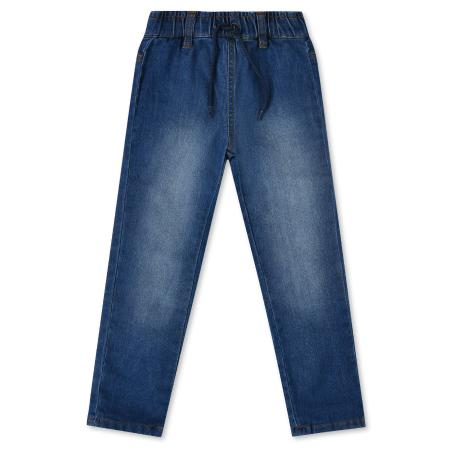

Джинсы Futurino синие

Стоимость: 899 руб.
Описание товара
Детям от 2 лет до 6 лет
Комфортные джинсы Futurino глубокого синего цвета. Модель гармонично впишется в базовый кэжуал образ.
Характеристики товара
- Код товара: 2036254001sup
- Артикул: 890525 X510 90
- Бренд: Futurino
- Страна-производитель: Бангладеш
- Материал: верх: 71% хлопок, 28% полиэстер
- Габариты упаковки: 30 x 5 х 30 см
- Вес упаковки: 0.17 кг.
Подробное описание товара
- Прочный мягкий хлопковый материал хорошо пропускает воздух
- Благодаря добавлению нитей п/а материал не вытягивается на коленях
- Широкий эластичный пояс с длинным шнурком
- Высокая износостойкость
Обращаем Ваше внимание, что правильное определение размера детской одежды напрямую зависит от индивидуальных особенностей ребёнка.
© Все права защищены